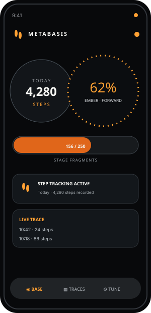
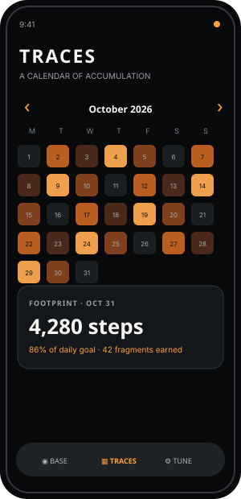

Count locally
Uses the phone’s own motion sensors. No account, ads, or Health Connect dependency.
Metabasis turns walking into a quiet visual journey. Your steps become fragments, fragments move through stages, and the dashboard evolves without an account or a noisy feed.
Counts and history stay on your device.

The camera-module mark is a glanceable status object, not a decoration. It sits beside readable language so activity, progress, and attention states are visible without making users decode an icon.
Uses the phone’s own motion sensors. No account, ads, or Health Connect dependency.
Every 100 new steps earns a fragment. Five stages form a pass; the journey keeps turning.
Export and import your local JSON history whenever you need a backup or restore.
These previews follow the current Android dashboard: Base for now, Traces for the record, and Tune for control.
Today’s movement, stage intensity, fragments, and tracking status.
A readable heatmap with a selected-day detail, not a streak scoreboard.

Personalization, accessibility choices, and clear ownership of local data.
Metabasis keeps onboarding short. The website guide explains the dashboard, heatmap, status module, permission, privacy, troubleshooting, and data backup in detail.